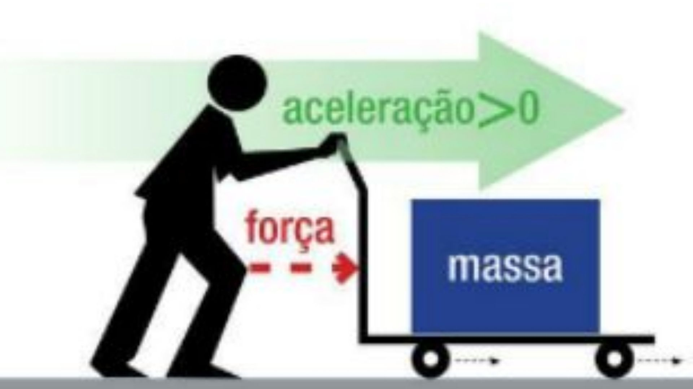
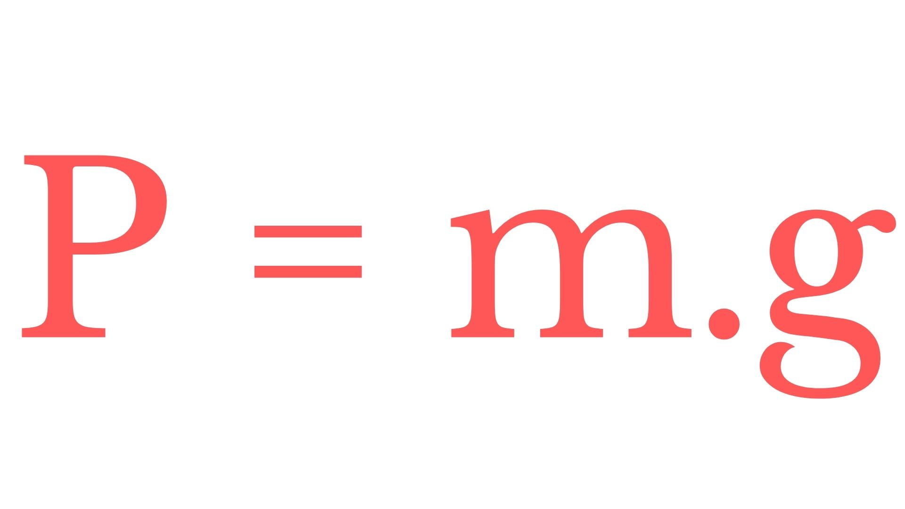
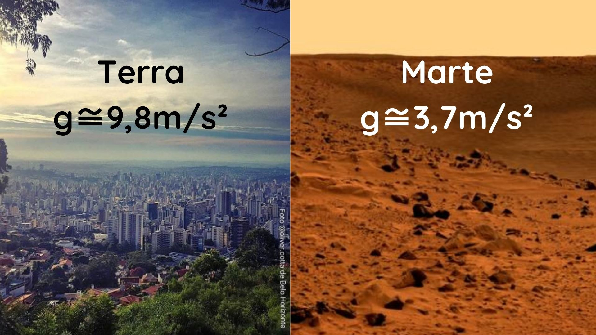

Segunda Lei de Newton
A Segunda lei de Newton explica que força resultante aplicada a um corpo, é igual ao produto da massa da
matéria pela aceleração adquirida. Ou seja, a soma da força vetorial sobre um corpo produzirá uma aceleração
desse corpo diretamente proporcional ao seu momento linear.
A forma matemática simplificada utilizada na Segunda Lei de Newton:
Onde:
F = força resultante (medida em newtons (N))
m = massa do corpo (medida em kg)
a = aceleração (medida em metro por segundo ao quadrado m/s²).
Essa fórmula estabelece a resultante das forças e é chamada equação fundamental da dinâmica. Assim, a massa do corpo (m) é a constante de proporcionalidade da equação e é a medida da inércia de um corpo.
A força, nesse caso, diz respeito a um referencial inercial. Sabendo que Força (F) e aceleração (a) são grandezas vetoriais que possuem módulo, direção e sentido, é importante levar em consideração a direção e o sentido no qual a força é aplicada.
Isso explica o porquê de quando uma força de mesma intensidade é aplicada em corpos de massas diferentes, a aceleração produzida por eles é diferente.
Força Resultante na Segunda Lei
É a soma vetorial de todas as forças aplicadas a um corpo. De acordo com a Segunda Lei de Newton (Princípio Fundamental da Dinâmica), a força resultante é igual o produto da massa pela aceleração.
Para haver aceleração e o corpo alterar sua velocidade é preciso que a soma das forças que atuam sobre ele, ou seja, a força resultante não seja nula. A aceleração dos corpos depende do seu tamanho e da força que imprime para que ocorra a alteração de velocidade. De modo que, os corpos que possuem maior massa, apresentam aceleração menor, já os corpos com menor massa, possuem aceleração maior.
Com isso, é possível concluir que a massa do corpo concede uma resistência à variação da velocidade, sendo, por isso, a medida indireta da inércia de um corpo. Nesse sentido, a aceleração de um corpo submetido a uma força resultante é diretamente proporcional à intensidade da força e inversamente proporcional à sua massa.
Ou seja, a Força Resultante e a aceleração sempre terão a mesma direção e sentido, mas podem ser contrários à velocidade
Força Peso
Com a Segunda Lei de Newton é possível chegar à outra definição essencial para compreensão de fenômenos da Física: o peso. A Força Peso equivale à atração que um planeta exerce sobre um corpo em sua superfície. Essa força pode ser calculada assim:
Onde:
P = Peso
m = massa
g = é a aceleração da gravidade local.
A força peso varia de acordo com a gravidade, portanto, a massa de um corpo é fixa, mas o seu peso é variável. Dessa forma, um corpo com massa de 30kg no planeta Terra, onde a aceleração da gravidade é 9,8 m/s², possui o seguinte peso: P = 30. 9,8 / P = 294 N.
O mesmo corpo em um planeta com gravidade diferente, como Marte, por exemplo, onde a gravidade = 3,711 m/s², o peso do corpo seria o seguinte: P = 30.3,711 / P = 37,11 N
